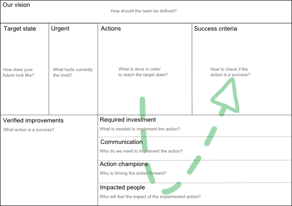

v0.2
Products should be developed strategically. If that is not the case than it is not product development but only fire fighting. For teams the same principle is true. In order to move from fire fighting to strategic team development typical retrospective tools are not enough.
The Canvas is a good fit for this purpose as it is adaptable, visible and easy to use.
The original Canvas is the Business Model Canvas helping enterprises to summarize their business. This concept was further enhanced and reused for product development in the Product Canvas. Additionally the Canvas is starting to gain grounds for change management. An example is the Lean Change Canvas. Keep in mind that team development also needs change management if done effectively.

To be inserted
To be inserted
To be inserted
To be inserted